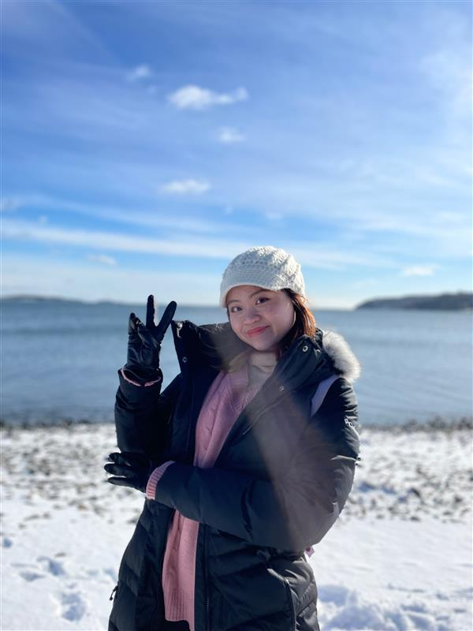

|  | Sheryl CHAN Si ErnHonours Student
Email: e0417604(AT)u.nus.edu |
Bio
As a child, I have always loved nature and animals, and dreamt of running my own veterinary clinic when I grew up. Even though I was exposed to the field of conservation while pursing my diploma in veterinary bioscience, my passion for marine conservation only sparked – and rather abruptly, when I chanced upon a newspaper article of a stranded sperm whale with its belly chock-full with plastic. While it was a poignant reminder of our impact on the ocean, it elicited in me a strong sense of stewardship to protect our environment. Beyond marine biology and conservation, environmental education holds a close place in my heart which led me (together with other like-minded individuals) to start Earth School Singapore, a non-profit organisation that aims to impact and inspire children and youth to sustainable actions through education.
Honours Project
There have been sporadic sightings of rare marine wildlife such as endangered sea turtles and dolphins within Singapore’s waters. However, conserving them is highly challenging due to the difficulties in detecting and monitoring their populations. With the advancements in molecular genetics and sequencing technology, the detection and study of such elusive marine wildlife is becoming more accurate and precise. Such progress can lead to more robust monitoring of marine populations and effective conservation strategies. One such technique is environmental DNA (eDNA)—a non-invasive method of identifying organisms based on the DNA that they shed into the environment. eDNA is a powerful tool that can be used for species detection and studying population structure of rare or endangered species. This study aims to employ eDNA techniques to characterise the population structure of three known vertebrates in Singapore—Sousa chinensis, Chelonia mydas and Eretmochelys imbricata.